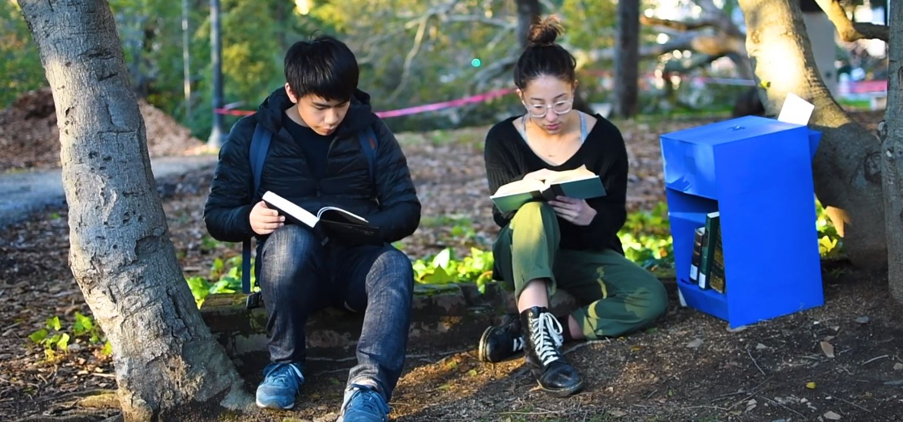

Introduction
The Free Library was developed with Andrew Louie, Angela Huang. Debbie Yuen, and Jeremy Rosen. Using the magnet embedded into the #LibrarianAF pins, users can activate a white noise machine that’s built into our free library. The noise creates a quiet space for readers, students, and activists to read and meditate on the value of academic spaces provided to us by librarians.
Observation
We began by conducting 4 interviews with UC Berkeley librarians involved with the UC-AFT movement. We found that their core motivations as a union was including Academic Freedom in their contracts, ensuring higher salaries, and a greater focus on professional development. I played a role in researching the Union’s organizers and reaching out to them for interviews. Additionally, I conducted and transcribed one of the interviews.
(left image) by Allen Zeng for The Daily Californian (right image) by Karen Chow for The Daily Californian
Pin Development
We designed and created blue, x-shaped pins that could be handed out at librarian union demonstrations. #LibrarianAF is a cheeky slogan that the librarians use - it stands for Librarian Academic Freedom as well as Librarian As F**k. The pins had magnets fitted in them that, when placed on the library, would activate a hall effect sensor that triggered white noise to play from within. I helped in refining the aesthetics of the pin. I also did the first stage prototypes that figured out how we would fabricate these pins.
Library Development
The library itself began as a CAD model done by Jeremy. It was laser cut out of plywood, painted blue, and assembled. Above the book keeping zone, there is a compartment with a removable cover that holds the library’s electronics and its speaker. When we realized that our library needed better reinforcement, we attached trusses with epoxy.
Final Product
Our final prototype is the blue free library exhibited to the left. It is a bright blue, plywood box that holds library books. It also has a slot in the back that librarians and their allies can use to distribute flyers about upcoming events. When a #LibraryAF pin is placed on the top, white noise is triggered, creating a meditative space that allows users to read wherever the mobile library is and thus get a deeper understanding of how important librarians, and the spaces they maintain, are. I helped paint and assemble the final product.

Future Directions
In the future, I’d like to be able to mount the library on a tripod to allow it to be taken in during harsh weather conditions. Additionally, I’d like to see the body of the library produced out of more robust materials like plexiglass and metal. Below are renderings I produced to envision the future of this object against the UC Berkeley landscape.
(above right image) Edited Image | Original photo by Nikhar Arora for The Daily Californian
(title image) Edited Image | Original photo found at https://farm2.static.flickr.com/1871/42485598270_1e5ee2d53e_b.jpg